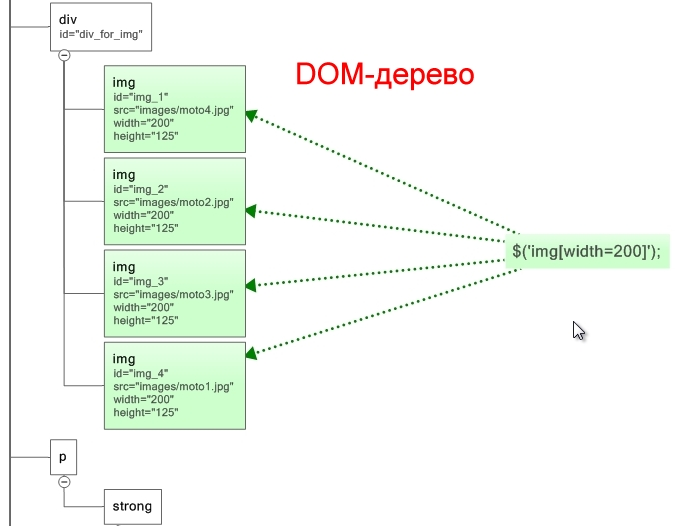

<script src="js/jquery-1.11.3.js" type="text/javascript"></script>
Загрузить последнюю версию библиотеки JQuery
Вызов метода JQuery:
jquery( ); или её сокращённый вариант: $( );
Запись var b = $('#divName p'); - создает JQuery объект.
Понятие метода цепных функций: $ ( '....' ).hide(3000).show(3000).width(815).height(130).text('Новый текст'); - когда к объекту можно прописать сразу несколько функций.
Выборка (набор) JQuery
01.) $('p'); - выборка по названию тэга <p>.
02.) $('#nameId'); - выборка по идентификатору элемента. <p id = "nameId">.
03.) $('.nameClass'); - выборка по названию класса <p class = "nameClass">.
04.) $('#nameId p'); $('p strong'); - выборка по вложенным селекторам.
05.) $('#nameId + p'); - выборка по следующему тэгу.
06.) $('#nameId > p'); - выбор дочерних тэгов.
07.) $('img[width = 200]'); - выборка по атрибуту-свойству тега.
08.) $('a[href ^= http]'); - выборка по тому, с чего должно начинатся значение атрибута-свойства тега.
09.) $('img[src $= .jpg]'); - выборка по тому, с чем должно заканчиваться значение атрибута-свойства тега.
10.) $('img[src *= kiranatos]'); - выборка по частице элемента, который может быть в любом месте в значении атрибута-свойства тега.
11.) $('#divName a[href^=F:\Folder\]'); $('#divName img[title=названиеРисунка]'); - комбинированная выборка.
---------------------------------------------------Фильтрация выборок
11.) $('#divName tr:even'); - выборка по чётным элементам (выбирает чёетные строки <tr> таблицы id="divName" - отсчёт строк идёт с НУЛЯ!!!).
12.) $('#divName tr:odd'); - выборка по нечётным элементам (выбирает чёетные строки <tr> таблицы id="divName" - отсчёт строк идёт с НУЛЯ!!!).
13.) $('#divName001:not(#divName001 p)'); - выборка всех тегов, кроме тех, что в not. Пример: $('img:not(#divName img)'); - Выбраны все картинки на странице, кроме тех картинок, что находятся в блоке div с идентификатором id="divName"
14.) $('p:has(strong)'); - выборка по внутреннему содержанию других тегов. Пример: $('div:has(fieldset)'); - Выбраны все блоки div в которых есть тег <fieldset>.
15.) $('p:contains(киранатос)'); - выборка абзацев в тексте которых встречается слово "киранатос".
16.) $('#divName img:first'); - выбран первый элемент (картинка <img>) в блоке div с идентификатором id="divName".
17.) $('#divName img:last'); - выбран последний элемент (картинка <img>) в блоке div с идентификатором id="divName".
18.) $('div:hidden'); - выборка всех блоков <div>...</div>, которые были скрыты в окне браузера.
19.) $('div:visibility'); - выборка всех блоков <div>...</div>, которые отображаются в окне браузера.
---------------------------------------------------
20.) $('img[width=200], a[href*=documents]'); - выборка разнотипных элементов делается через запьятую.
21.) $('img[alt]'); - отобрать элемент по наличию атрибута, т.е. атрибут alt просто должен быть, независимо от того, чему он равен.
Работа с текстом
Метод JQuery var t = $('#divName').text; - вернёт текст в переменную t. (Вывести его например, можно с помощью модального окна alert(t);)
var t = $( ' #divName ' ).text( ' Текст, измененный с помощью JQuery ' ); - Изменение текста.
для изменения текста используется метод .text, для изм кода - .html
Изменение html-кода документа
$('#divName').html(); - Для получение куска кода по id тега объекта.Пример: Cвойство .html()
Чтобы изменить код, нужно вставить в скобки новый текст:
Пример: Изменение текста с помощью свойства .html()
Исчезновение объектов
$('img[src*=anime]').hide(3000); - функция b1.hide(time,[callback]); прячет объект за 3 секунды.
$('img[src*=anime]').show(3000); - функция b1.show(time,[callback]); показывает спрятанный объект за 3 секунды.
$('img[src*=anime]').fadeOut(3000); - функция b1.fadeOut(time,[callback]); прячет объект за 3 секунды.
$('img[src*=anime]').fadeIn(3000); - функция b1.fadeIn(time,[callback]); показывает спрятанный объект за 3 секунды.
$('img[src*=anime]').fadeTo(3000, 0.5); - функция b1.fadeTo(time,opacity,[callback]); делает объект прозрачным за 3 секунды на величину 0.5.
$('img[src*=anime]').slideUp(3000); - функция b1.slideUp(time,[callback]); объект уезжает вверх за 3 секунды.
$('img[src*=anime]').slideDown(3000); - функция b1.slideDown(time,[callback]); объект приезжает сверху за 3 секунды.
Пример: Демонстрационный файл
*Примечание: time - милисекунды на выполнение, opacity - прозрачность от 0 до 1, [callback] - не объязательный параметр, указывает на следующее действие, которое нужно выполнить.
Пример задачи: Написать функцию, которая получает 2 параметра - id элемента, который должен исчезнуть со страницы и время его исчезнования. При вызове функции указанный элемент должен плавно исчезать (fadeOut) за указанное время. При этом, второй параметр вам надо проверить на удовлетворение 2-м условиям. 1. Параметр должен быть числом. 2. Число должно быть в диапазоне от 500 до 10000. Если число за диапазоном, то вы должны прервать выполнение функции и вернуть false.
Изменение ширины и высоты.
в HTML-файле:
<img src="_img/anime.jpg" alt="" width="500" height="500" />
в CSS-файле:
#nameId {
width:250px;
height:200px;
}
в JS-файле:
var b_resolution = $('#divName').height(130).width(815);
Пример: Изменение размеров
Пример задачи: Нужно написать функцию, которая будет вычислять размеры элемента. Идентификатор элемента, размеры которого надо вычислить, передаются в функцию в качестве параметра. Результаты функция выводит в специальный блок div с id="forresults", который находится после таблицы по продаже б/у мотоциклов нашего сайта.
$(document).ready(function(){
function whCalc(element) {
var idFull = "#" + element;
var wElement = $(idFull).width();
var hElement = $(idFull).height();
$('#forresults').text(wElement + ' x ' + hElement);
} // конец function whCalc
whCalc('divName');
}); // конец ready
Доступ к атрибутам.
var a = $('img[src*=anime]').attr('height'); - получение значения аттрибута height.
$('#divName').text("Высота: " + a); - вывод в окно браузера.
$('img[src*=anime]').attr('height', 500); - изменение значения аттрибута height. (В случае если у объекта вообще не было атрибута - он будет создан)
$('#divName').removeAttr('title'); - удаление аттрибута height.
Пример: Работа с атрибутами
Работа с классами
$('#divName').addClass('nameNewClass'); - добавить новый класс nameNewClass к объекту #divName.
$('#divName').removeClass('nameClass'); - удалить класс nameClass у объекта #divName.
Метод .css()
var t = $('#divName').css('margin-bottom'); - получить значение css-свойства margin-bottom.
$('#divName').css('color','#3F4078'); - установить новое значение для css-свойства color.
Два возможных варианта установки занчений css-свойств:
1. $ ( ' #divName ' ).css( 'color','#3F4078' ).css( 'font-size' , '19px' );
2. Литерал объекта:
$ ( ' #divName ' ).css ( {
'color' : '#3F4078',
'font-size' : '19px'
} ) ;
Пример задачи: На странице есть элемент span с классом "pq", который находится внутри заголовка h3 с id="my_h3". Ваша задача: удалить у этого элемента класс "pq" и добавить ему 3 css свойства за раз: border: 1px solid #cc0000 ; padding: 5px ; background-color: #f6f6f6.
Метод .animate()
$( '#divName' ).animate( { 'width':'450px' }, 4000); - Метод делает постепенное уменьшение указанного свойства, за 4 секунды.
$( '#divName' ).animate( { 'color':'#3F4078' }, 4000, function() { alert( ' Готово ' ) ; } ) ; - Метод изменяет цвет за 4 секунды и вызывает функцию (название функции давать не нужно, скобки оставить - она анонимная).
$( ' #divName ' ).animate( {
'color':'#3F4078'
} , 4000 , function ( ) {
alert( ' Готово ' );
} ) ;
$('#divName').animate({'color':'#3F4078'},4000, kiranatos); - Метод изменяет цвет за 4 секунды и вызывает функцию kiranatos (скобки не нужны).
Для свойств, которые пишутся через дефис используется верблюжа запись:
1) margin-top - $('#divName').animate({'marginTop':'450px'},4000);.
2) padding-left - $('#divName').animate({'paddingLeft':'450px'},4000);.
Вставка с помощью .before() .after() .prepend() и .append()
$('#textSimple').before('<p>Данный абзац вставлен с помощью метода before()</p>');
$('#textSimple').after('<p>Данный абзац вставлен с помощью метода after()</p>');
$('#textSimple').prepend('<p>Данный абзац вставлен с помощью метода prepend()</p>');
$('#textSimple').append('<p>Данный абзац вставлен с помощью метода append()</p>');
Пример:
Абзац с id="textSimple"
Автоматическая функция jQuery.each (цикл для каждого объекта)
$ ( ' img ' ).each( function() {
...
} ) ;
Выполняет функцию для каждого элемента набора. Это означает, что каждый раз, когда выполняется указанная функция (а выполняется она один раз для каждого совпавшего элемента) ключевое слово ‘this’ указывает на конкретный элемент DOM. Помните, что слово ‘this’ НЕ указывает на объект jQuery. Кроме того, запущенная функция передает единственный аргумент, который показывает позицию элемента в составе набора совпавших элементов (integer, отсчет с 0).
Доп.информация: Вызов функции для элементов набора .each()
Пример задачи: Ваша задача перебрать все картинки страницы и добавить красную 1px рамку тем из них, у которых в атрибуте title встречается буква "т", а высота больше 50, но меньше 100.
*** $(this) - указывает на данный объект.
Работа с объектом
var a = $('div').size(); - функция возвращает количество объктов выборки.
var a = $('div').get(N); - функция возвращает javascript объкт под номером N из всей выборки.
var a = $('#divName').clone(); - функция дублирует объкт (создает клон объекта). Потом его можно вставить вот так: $(#imgName).after(a); .
var a = $('#divName').remove(); - функция удаляет объкт, но возвращает его копию в переменную (Вырезать). Если нужно, его потоми можно вставить вот так: $(#imgName).after(a);
События отслеживаемые браузером
01. mouseover - наведение мыши на объект
02. mouseout - увод мыши с объекта
03. click - клик мишью по объекту
04. dblclick - двойной клик мишью по объекту
05. mousemove - переещение курсора мыши
06. mousedown - момент нажатия кнопки мыши
07. mouseup - момент отпускания кнопки мыши
08. submit - момент отправки формы обработчику
09. focus - момент получения фокуса объектом (работает и для ссылок)
10. blur - момент потери фокуса объектом (работает и для ссылок)
11. change - изменение объекта формы
12. reset - сброс формы
13. keypress - нажатие клавиши на клавиатуре
14. keydown - момент нажатия клавиши, до момента отпускания
15. keyup - момент отпускания клавиши
16. load - полная загрузка страницы
17. resize - изменение размеров окна браузера
18. scroll - прокрутка страницы
19. unload - уход со страницы
Традиционная модель, которая применяется в javascript
var b = document.getElementById( ' divName ' );
function nameClick( ) {
alert( "Ширина: " + b.width );
}
b.onclick = nameClick; - Функцию с именем nameClick приисваевают без скобок. В javascript к событиям добавляется префикс "on". Пример: onmouseove, onmouseout
Устаревший вариант, применяемый в html-файлах:
<img id="nameImg" onclick="alert('Тест')" src="F:\folder\...\">
Обработка событий в JQuery. Примеры:
$( 'input[name="buttonEx"]' ).click( function( ) {
alert( ' Вы кликнули по кнопке ' );
} ) ;
$(window).scroll( function( ) {
alert( ' Произошло событие прокрутки страницы ' );
} ) ;
ТУТ ДОЛЖНА БЫТЬ ДЕМОНСТРАЦИЯ ПРОКРУТКИ
$('#divName1').click( function( ) {
var m = $(this).clone();
$('#divName2').append(m);
} ) ;
Демонстрационная картинка для клонирования (кликните по картинке) :

Пример задачи:Напишите обработчик события, который делает следующее. При клике мышью на любом из названий мотоциклов в этом блоке:
- Харлей Дэвидсон
- Кроссовый мотоцикл
- Гоночный мотоцикл
- Концептуальный мотоцикл
Варианты решения:Мой и Попова:
$('ol li').each(function() {
var a = $(this).text();
$(this).click( function(){
$('#moto_table tbody').append('<tr><td>'+ a +'</td><td></td></tr>');
b = $('#moto_table tbody tr:last');
b.hide();
b.fadeIn(3000);
})
})
Пример задачи JQUERY_6:Вам нужно написать обработчик события, который будет подсвечивать строку таблицы (id="moto_table"), на которую навели курсор мыши вот таким цветом: #1F233C, а текст будет делать белым.
Варианты решения:Мой и Попова:
var col, bcol;
$('#moto_table tr').mouseover(function(){
col = $(this).css('color');
bcol = $(this).css('background-color');
$(this).css({
'color': '#FFFFFF',
'background-color': '#1F233C'
});
})
$('#moto_table tr').mouseout(function(){
$(this).css({
'color': col,
'background-color': bcol
});
})
JQuery cобытия hover() и toggle()
$('#divName').hover( function(){} , function(){} ); - (смотри задачу JQUERY_6)Событие JQuery отвечающее за наведение и увод мыши с объекта. Первая скрытая функция выполняется при наведении мыши, второя функция при уходе мыши с объекта
$('#divName').toggle( function(){} , function(){} ); - Событие (Переключатель) JQuery отвечающее за первый и второй клик мышью. Первая скрытая функция выполняется при первом клике, второя функция при втором клике
$('#formHide').toggle( function() {
$('#myForm').fadeOut(1000)
$(this).text('Развернуть форму')
} , function() {
$('#myForm').fadeIn(1000)
$(this).text('Свернуть форму')
} ) ;
Пример задачи JQUERY_7:1. С помощью события hover() и функции css() сделайте так, чтобы при наведении на кнопку "Отправить заявку", ее свойства менялись: а. Фоновый цвет должен меняться на #32375D. б. Цвет текста на белый. Когда же курсор мыши убирается с элемента, то все должно возвратиться на свои места.
2. С помощью toggle() сделайте так, чтобы при первом щелчке строка таблицы подсвечивалась, а при повторном принимала обычное положение (здесь уже css() использовать не обязательно, можете использовать классы).
Варианты решения:
Как получить информацию о событиях? (Объект событий)
Переменная eventName в скрытой функции является объектом событий и хранит всю информацию о событии.
$( ' divName ' ).click( function(eventName) { var a = eventName.screenY; } ) ;
Можно получить такую информацию из объекта событий (для свойства click):
eventName.screenX; - Координата X щелчка указателя мыши от КРАЯ МОНИТОРА, а не браузера.
eventName.screenY; - Координата Y щелчка указателя мыши от КРАЯ МОНИТОРА, а не браузера.
eventName.pageX; - Координата X щелчка указателя мыши от КРАЯ БРАУЗЕРА.
eventName.pageY; - Координата Y щелчка указателя мыши от КРАЯ БРАУЗЕРА.
eventName.altKey; - Была ли нажата клавиша ALT на клавиатуре, при щелчке мыши (Возвращает значение true/false).
eventName.ctrlKey; - Была ли нажата клавиша CTRL на клавиатуре, при щелчке мыши (Возвращает значение true/false).
eventName.shiftKey; - Была ли нажата клавиша SHIFT на клавиатуре, при щелчке мыши (Возвращает значение true/false).
eventName.target; - Объект отреагировавший на клик.
Чтобы узнать id объекта отреагировавшего на клик, нужно:
$('#divName').click(function (e) {
var m = e.target;
document.write( " Объект отреагировавший на клик: " + m.id );
} ) ;
eventName.preventDefault; - Запретить стандартное действие по умолчанию.
$('#urlName').click(function (e) {
e.preventDefault();
$( ' #divName ' ).append( ' <p>Вместо перехода по ссылке мы добавили абзац.</p> ' );
} ) ;
Второй вариант, вместо .preventDefault(); написать return false, но код, который будет идти после return false выполнятся не будет.
$('#urlName').click(function (e) {
$( ' #divName ' ).append( ' <p>Вместо перехода по ссылке мы добавили абзац.</p> ' ); - ВЫПОНЯЕТСЯ !
return false;
$( ' #divName ' ).append( ' <p>Вместо перехода по ссылке мы добавили абзац.</p> ' ); - НЕ ВЫПОНЯЕТСЯ !
} ) ;
Пример задачи JQUERY_8 (90):Вам надо написать скрипт, который делает следующее. При щелчке на любом из наших 4-х мотоциклов, вокруг него должна появляться сплошная рамка в 4px. При этом, если в момент щелчка мышью по мотоциклу была зажата клавиша shift, то цвет рамки должен быть #cc0000, а если не была зажата то цвет рамки должен быть #333333. При повторном щелчке по тому же самому мотоциклу рамка должна исчезать.
Варианты решения:

Пример задачи JQUERY_9 (91):Сделать так, чтобы во время нажатия кнопки отправки формы с id="#my_button", появлялось сообщение с вопросом: "Вы подтверждаете правильность ввода данных?" В этом окошке должны быть кнопки "OK" и "Отмена". Если человек нажмет "Ок" то форма отправляется как положено, а если нажмет "Отмена", то форма не отправляется. Подсказка: для задания вопроса используйте метод confirm()
Варианты решения:

Пример задачи JQUERY_10 (92):Это домашнее задание состоит из трех частей.
1. Над галереей нужно сделать текстовый переключатель "Показать/Скрыть галерею", который будет показывать и скрывать галерею функциями slideUp() и slideDown(). Изначально галерея должна быть скрыта.
2. Приглядитесь к нашей галерее. У нее есть один существенный недостаток. Если, например, у нас в большой картинке на данный момент стоит желтый мотоцикл и при этом, мы щелкаем по миниатюре этого же желтого мотоцикла, то большая картинка будет пытаться загрузиться еще раз. Это не очень то и хорошо, поэтому ваша задача состоит в том, чтобы при такой ситуации такого не происходило и большая картинка просто оставалась на месте.
3. Ваша задача выделить маленькую картинку того мотоцикла, который сейчас показан. Она должна быть выделена одним из следующих способов - либо должна быть обведена рамкой, либо должна иметь прозрачность 60% либо и то и другое вместе.
Варианты решения:

$ ( ' #divName ' ).html( ' <p>текст</p>...<img>...</img> ' );